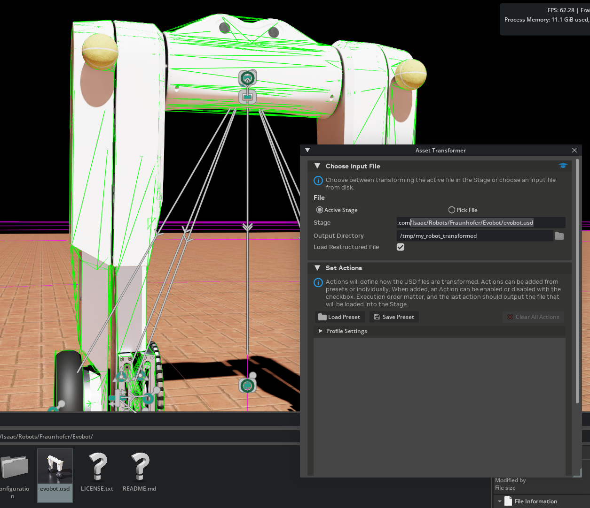
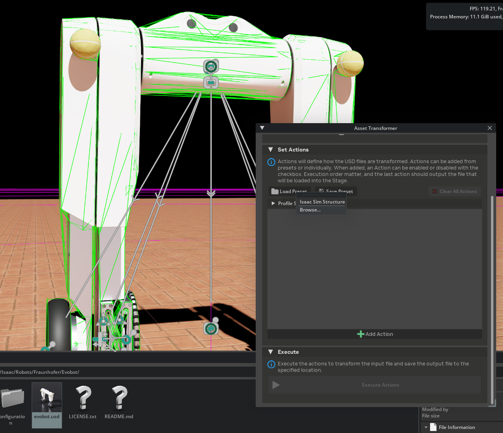
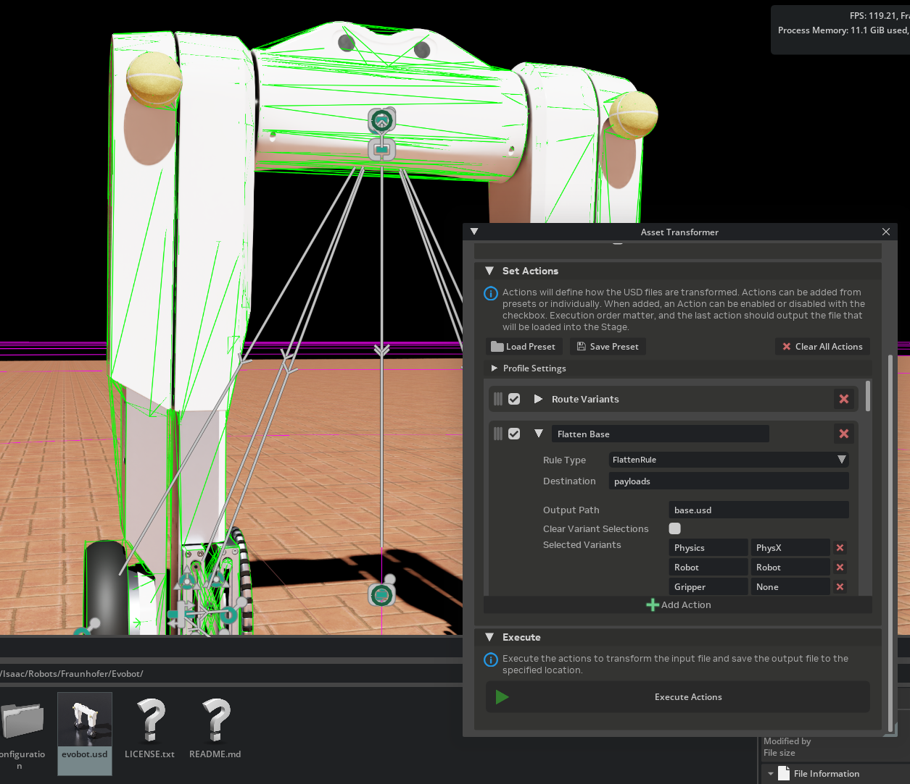
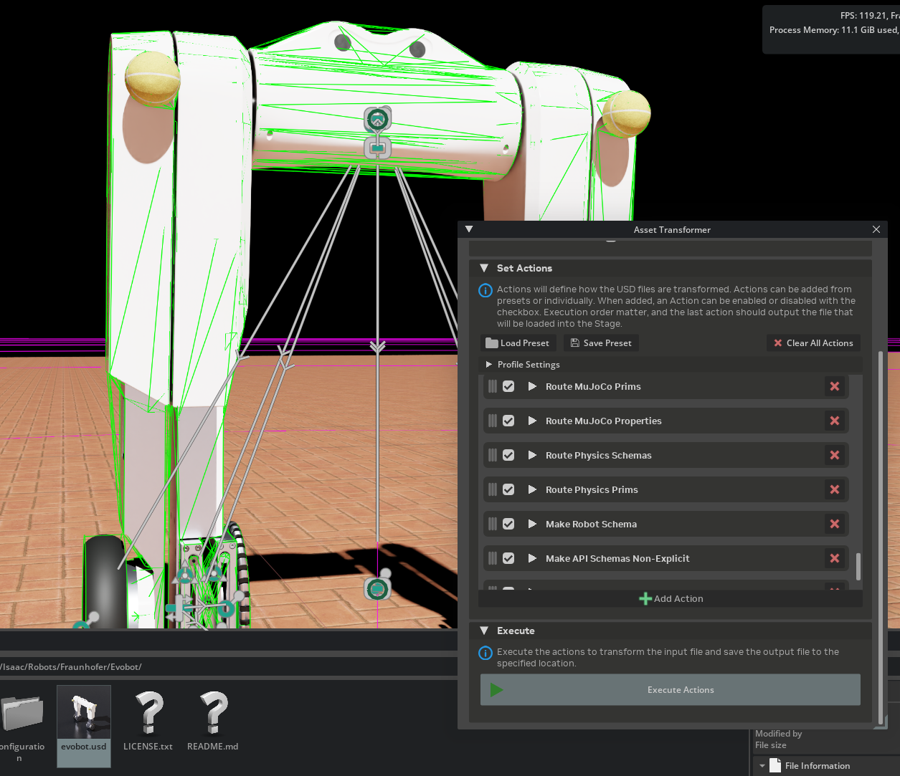
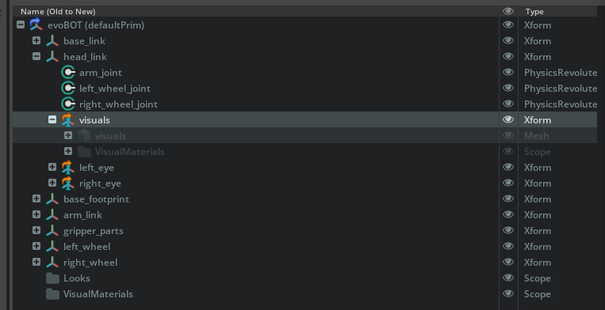
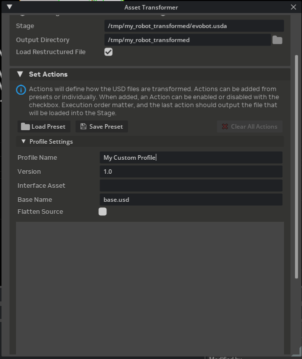
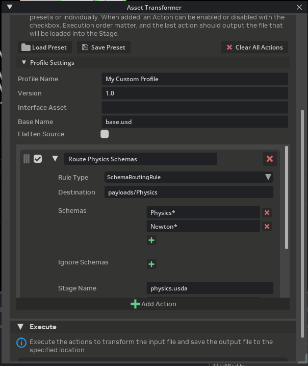
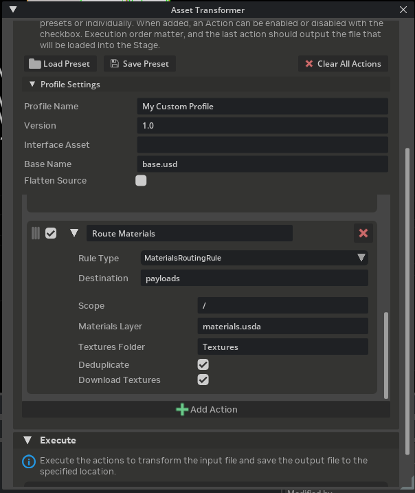
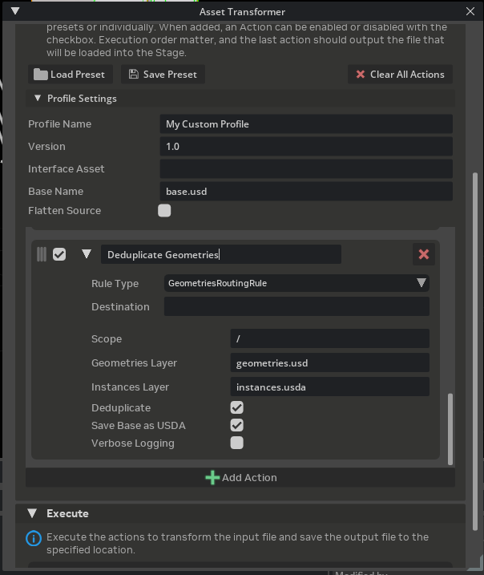
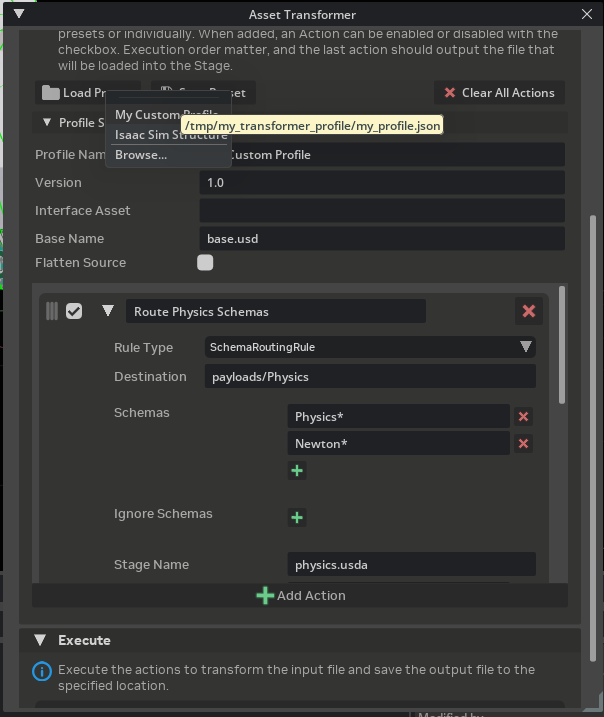

Asset Transformer Tutorials#
These tutorials walk through common Asset Transformer workflows step by step. Each tutorial builds on the previous one, so it is recommended to follow them in order.
For an in-depth explanation of the UI and concepts, refer to Asset Transformer.
Open the Asset Transformer from Tools > Robotics > Asset Editors > Asset Transformer before starting.
Tutorial 1: Transform an Asset Using the Isaac Sim Structure Profile#
This tutorial demonstrates how to transform a robot USD asset into the recommended Isaac Sim asset structure using the built-in Isaac Sim Structure profile.
Prerequisites#
A robot USD asset loaded in the stage, or available on disk. This tutorial uses a sample robot from
Isaac/Robots/in the Isaac Sim assets. For this tutorial, we will use theIsaac/Robots/Fraunhofer/Evobot/evobot.usdasset.
Instructions#
Select the Input Asset#
In the Input Section, select Active Stage to transform the currently open stage, or select Pick File and browse to a robot USD file on disk.
Set the Output Directory to a writable folder where the transformed asset package will be saved (for example,
/tmp/my_robot_transformed/).Check Load Restructured File if you want the output file to open automatically after execution.
{kind=link}

Load the Built-in Profile#
In the Actions Section, click the Load Preset button.
From the recent presets menu, select Isaac Sim Structure.
The action list populates with all the rules defined in the Isaac Sim Structure profile.
{kind=link}

Expand one or two rules in the action list to inspect their parameters. Each rule shows its Rule Type, Destination, and Parameters.
{kind=link}

Execute the Transformation#
Click Execute Actions in the Execute Section. The button is enabled when at least one action is enabled and an output directory is set.
Wait for the pipeline to complete. The console log displays progress for each rule.
{kind=link}

Verify the Output#
Since Load Restructured File was checked, the transformed asset opens automatically. Notice the loaded asset does not contain the ground plane anymore, as it was not in the default prim of the original robot asset. This is expected and desired.
Inspect the output folder structure. It should follow the Isaac Sim Asset Structure:
output_directory/
├── payloads/
│ ├── base.usd
│ ├── robot.usda
│ ├── geometries.usd
│ ├── instances.usda
│ ├── materials.usda
│ ├── Textures/
│ │ └── ...
│ └── Physics/
│ ├── physics.usda
│ ├── physx.usda
│ └── mujoco.usda
├── <asset_name>.usda (interface layer)
└── transform_report.json
Inspect the robot prim structure, and verify that all meshes are now added through a reference, and the former looks scope is now empty, since all materials are now added to the materials.usda layer, and added through the meshes.

Inspect the default prim properties, and verify that there is a Variant set for the physics engine, with the physx variant selected.
Open
transform_report.jsonto review per-rule execution logs and confirm all rules completed successfully.
{kind=link}
Tutorial 2: Creating a New Profile#
This tutorial demonstrates how to build a custom transformation profile from scratch. The example profile routes physics schemas and materials into dedicated layers, a common workflow for assets that do not need the full Isaac Sim Structure treatment.
Instructions#
Clear the Action List#
Click Clear All Actions to start with an empty pipeline.
Expand the Profile Settings frame and fill in the metadata:
Profile Name:
My Custom ProfileVersion:
1.0Base Name:
base.usdFlatten Source: Leave unchecked unless your source asset has complex sublayer composition you want to flatten first.
{kind=link}

Add a Schema Routing Rule#
Click Add Action to add a new rule to the pipeline.
Expand the new action and set:
Rule Type: Search for
SchemaRoutingRuleand selectisaacsim.asset.transformer.rules.core.schemas.SchemaRoutingRule.Name:
Route Physics SchemasDestination:
payloads/PhysicsParameters:
stage_name:physics.usdaschemas:["Physics*", "Newton*"](Click on the [+] button to add a new schema line per item in the list)
{kind=link}

Add a Materials Routing Rule#
Click Add Action again to add a second rule.
Expand it and set:
Rule Type: Search for
MaterialsRoutingRuleand selectisaacsim.asset.transformer.rules.perf.materials.MaterialsRoutingRule.Name:
Route MaterialsDestination:
payloadsParameters:
materials_layer:materials.usdatextures_folder:Texturesdeduplicate:truedownload_textures:true
{kind=link}

Add a Geometry Deduplication Rule#
Click Add Action one more time.
Expand and set:
Rule Type: Search for
GeometriesRoutingRuleand selectisaacsim.asset.transformer.rules.perf.geometries.GeometriesRoutingRule.Name:
Deduplicate GeometriesDestination:
payloadsParameters:
geometries_layer:geometries.usdinstance_layer:instances.usdadeduplicate:truesave_base_as_usda:true
{kind=link}

Review the Pipeline#
The action list now contains three rules in order:
Route Physics Schemas
Route Materials
Deduplicate Geometries
Verify execution order is correct. Drag actions to reorder if needed. Use the checkboxes to disable individual rules during testing.
{kind=link}

Note
Rule execution order matters. Rules execute sequentially and each rule operates on the working stage as modified by the previous rule. Place schema routing rules before material and geometry rules so that schemas are separated before deduplication occurs.
Tutorial 3: Saving a Profile#
After building the custom profile in Tutorial 2, save it for reuse.
Instructions#
Verify the profile metadata by expanding the Profile Settings frame. Confirm the Profile Name, Version, and other fields are correct.
Click the Save Preset button in the Actions Section.
In the file picker, navigate to the desired save location and enter a filename (for example,
my_custom_profile.json).Click Save.
The profile is saved as a JSON file and added to the recent presets list for quick loading in the future.
Verify the saved file by opening it in a text editor. The structure matches the Rule Profile format:
{
"profile_name": "My Custom Profile",
"version": "1.0",
"rules": [
{
"name": "Route Physics Schemas",
"type": "isaacsim.asset.transformer.rules.core.schemas.SchemaRoutingRule",
"destination": "payloads/Physics",
"params": {
"schemas": [
"Physics*",
"Newton*"
],
"ignore_schemas": [],
"stage_name": "physics.usda",
"prim_names": [
".*"
],
"ignore_prim_names": []
},
"enabled": true
},
{
"name": "Route Materials",
"type": "isaacsim.asset.transformer.rules.perf.materials.MaterialsRoutingRule",
"destination": "payloads",
"params": {
"scope": "/",
"materials_layer": "materials.usda",
"textures_folder": "Textures",
"deduplicate": true,
"download_textures": true
},
"enabled": true
},
{
"name": "Deduplicate Geometries",
"type": "isaacsim.asset.transformer.rules.perf.geometries.GeometriesRoutingRule",
"destination": "payloads",
"params": {
"scope": "/",
"geometries_layer": "geometries.usd",
"instance_layer": "instances.usda",
"deduplicate": true,
"save_base_as_usda": true,
"verbose": false
},
"enabled": true
}
],
"flatten_source": false,
"base_name": "base.usd"
}
Tutorial 4: Modifying a Rule Profile#
This tutorial demonstrates how to load an existing profile, modify its rules and parameters, and re-save it. The example modifies the profile saved in Tutorial 3 to add the Interface Connection Rule and change geometry deduplication settings.
Instructions#
Load the Existing Profile#
Click Load Preset and select the
my_custom_profile.jsonfile saved previously. The action list populates with the three rules from Tutorial 3.
Add a New Rule#
Click Add Action to add a fourth rule.
Expand it and set:
Rule Type:
Interface Connection RuleName:
Connect InterfacesDestination:
payloadsParameters:
Base Layer:payloads/base.usdaBase Connection Type:ReferenceGenerate Folder Variants:truePayloads Folder:payloadsCustom Connections:[]Default Variant Selections:{}
Modify an Existing Rule#
Expand the Deduplicate Geometries rule.
Change the
deduplicateparameter fromtruetofalseto disable deduplication while keeping the geometry routing active.
Reorder the Rules#
Drag the Deduplicate Geometries rule to the second position, so that it is executed before the Route Materials rule.
Disable a Rule#
Uncheck the enable checkbox next to Route Materials to disable it without removing it from the pipeline. This is useful for iterating on specific transformations.
Update Profile Metadata#
Expand Profile Settings.
Change the Version to
1.1to track the modification.
Save the Modified Profile#
Click Save Preset.
Overwrite the existing file or choose a new filename.
The final action list now contains four rules:
# |
Rule Name |
Enabled |
Change |
|---|---|---|---|
1 |
Route Physics Schemas |
Yes |
(unchanged) |
2 |
Deduplicate Geometries |
Yes |
( |
3 |
Route Materials |
No |
(disabled) |
4 |
Connect Interfaces |
Yes |
(new rule added) |
Tutorial 5: Adding an Asset Transform Pipeline Through Code#
This tutorial demonstrates how to use the Asset Transformer API to run a transformation pipeline programmatically. This is useful for batch processing, CI/CD integration, or embedding asset transformation into custom extensions and workflows.
The code blocks below are taken from a single script, docs/isaacsim/snippets/robot_setup/asset_transformer_tutorials.py, which you can run as a standalone app (for example, to list registered rule types) using Isaac Sim’s python.sh.
Load and Run a Saved Profile#
The simplest approach is to load an existing profile JSON file and execute it against an input asset.
import json
from isaacsim.asset.transformer import AssetTransformerManager, RuleProfile
# profile_path = "/path/to/my_custom_profile.json"
# input_stage = "/path/to/my_robot.usd"
# package_root = "/output/my_robot_package"
# Load a saved profile from disk
with open(profile_path, "r") as f:
profile_data = json.load(f)
profile = RuleProfile.from_dict(profile_data)
# Create the manager and run the transformation
manager = AssetTransformerManager()
report = manager.run(
input_stage=input_stage,
profile=profile,
package_root=package_root,
)
# Inspect results
print(f"Output asset: {report.output_stage_path}")
for result in report.results:
status = "OK" if result.success else "FAILED"
print(f" [{status}] {result.rule.name}")
if result.error:
print(f" Error: {result.error}")
Build a Profile Programmatically#
To define a profile entirely in code without a JSON file:
from isaacsim.asset.transformer import (
AssetTransformerManager,
RuleProfile,
RuleSpec,
)
# input_stage = "/path/to/my_robot.usd"
# package_root = "/output/my_robot_package"
profile = RuleProfile(
profile_name="Code-Defined Profile",
version="1.0",
base_name="base.usd",
flatten_source=False,
rules=[
RuleSpec(
name="Route Physics Schemas",
type="isaacsim.asset.transformer.rules.core.schemas.SchemaRoutingRule",
destination="payloads/Physics",
params={
"stage_name": "physics.usda",
"schemas": ["Physics*", "Newton*"],
},
),
RuleSpec(
name="Route Materials",
type="isaacsim.asset.transformer.rules.perf.materials.MaterialsRoutingRule",
destination="payloads",
params={
"materials_layer": "materials.usda",
"assets_folder": "Textures",
"download_textures": True,
},
),
RuleSpec(
name="Deduplicate Geometries",
type="isaacsim.asset.transformer.rules.perf.geometries.GeometriesRoutingRule",
destination="payloads",
params={
"geometries_layer": "geometries.usd",
"instance_layer": "instances.usda",
"deduplicate": True,
},
),
],
)
manager = AssetTransformerManager()
report = manager.run(
input_stage=input_stage,
profile=profile,
package_root=package_root,
)
print(f"Transformation complete: {report.output_stage_path}")
Use the Isaac Sim Structure Profile in Code#
To use the built-in Isaac Sim Structure profile programmatically, load it from the extension’s data directory:
import json
from pathlib import Path
from isaacsim.asset.transformer import AssetTransformerManager, RuleProfile
from isaacsim.core.utils.extensions import get_extension_path_from_name
# input_stage = "/path/to/my_robot.usd"
# package_root = "/output/my_robot_isaacsim_structure"
# Locate the built-in profile shipped with the rules extension (use get_extension_path_from_name so the path is absolute)
ext_path = Path(get_extension_path_from_name("isaacsim.asset.transformer.rules"))
profile_path = ext_path / "data" / "isaacsim_structure.json"
with open(profile_path, "r") as f:
profile = RuleProfile.from_dict(json.load(f))
manager = AssetTransformerManager()
report = manager.run(
input_stage=input_stage,
profile=profile,
package_root=package_root,
)
Batch-Process Multiple Assets#
Combine the API with standard Python to transform multiple assets:
import json
from pathlib import Path
from isaacsim.asset.transformer import AssetTransformerManager, RuleProfile
# profile_path = "/path/to/my_custom_profile.json"
# asset_paths = ["/assets/robot_a.usd", "/assets/robot_b.usd", "/assets/robot_c.usd"]
# output_base_dir = "/output"
with open(profile_path, "r") as f:
profile = RuleProfile.from_dict(json.load(f))
manager = AssetTransformerManager()
for asset_path in asset_paths:
asset_name = Path(asset_path).stem
output_dir = f"{output_base_dir.rstrip('/')}/{asset_name}_transformed"
report = manager.run(
input_stage=asset_path,
profile=profile,
package_root=output_dir,
)
all_ok = all(r.success for r in report.results)
print(f"{asset_name}: {'PASS' if all_ok else 'FAIL'} -> {report.output_stage_path}")
Save and Inspect the Execution Report#
The ExecutionReport returned by manager.run() can be serialized to JSON for logging or CI validation:
import json
from pathlib import Path
# report = <ExecutionReport from manager.run() in any example above>
# After running the transformation (report from any example above)
report_path = Path(report.package_root) / "transform_report.json"
with open(report_path, "w") as f:
json.dump(report.to_dict(), f, indent=2)
print(f"Report saved to: {report_path}")
Discover Available Rule Types#
To list all registered transformation rules at runtime:
from isaacsim.asset.transformer import RuleRegistry
registry = RuleRegistry()
for rule_type in registry.list_rule_types():
print(rule_type)
This prints all fully qualified rule class names that can be used in RuleSpec.type. Refer to Asset Transformer Rules Reference for documentation on each rule.